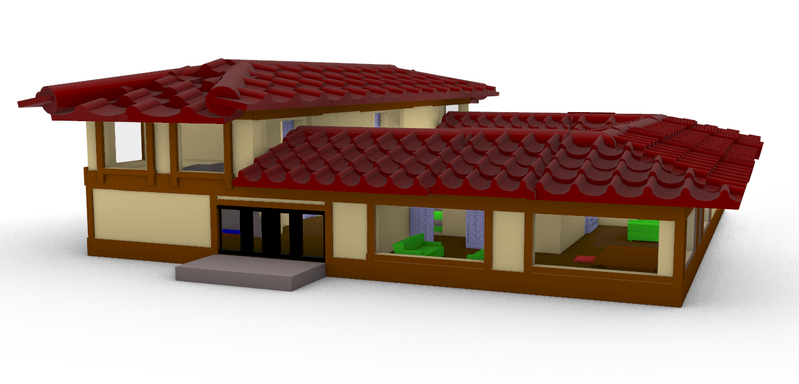
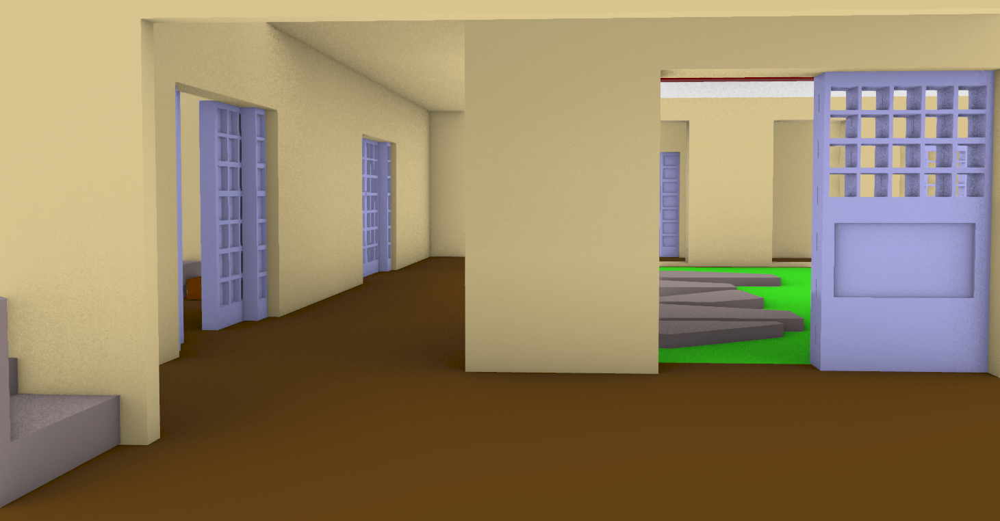
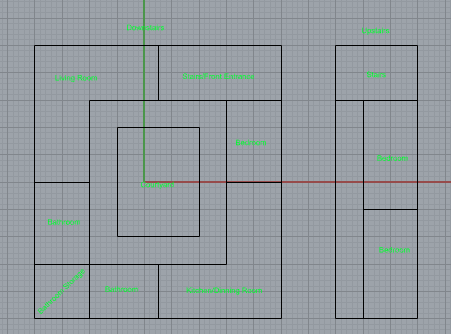
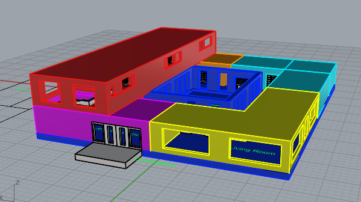
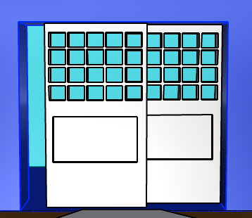
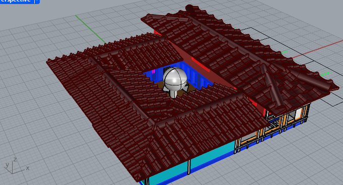
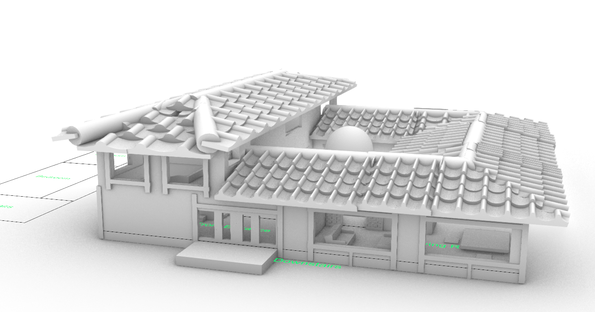
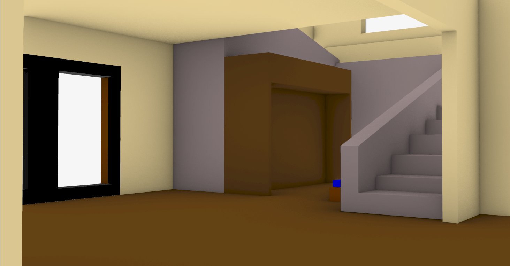
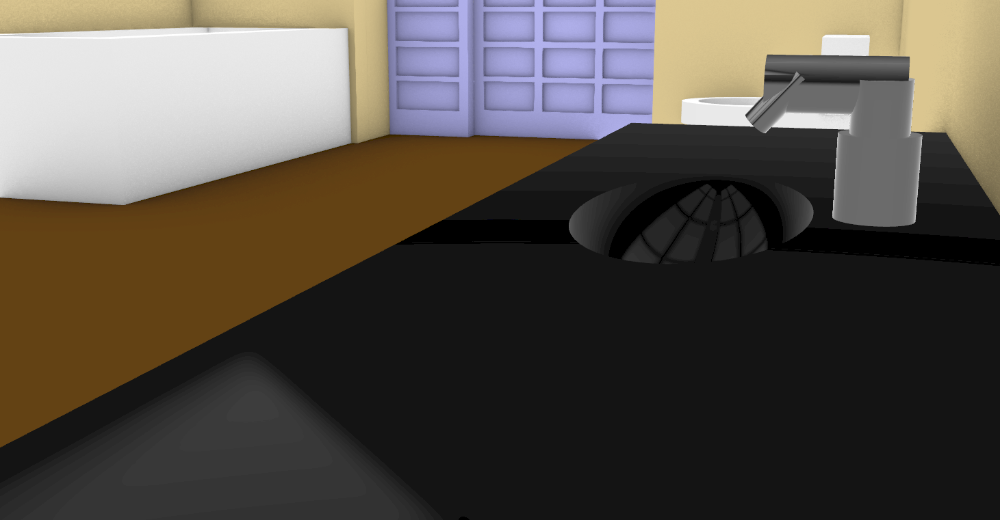

This was project done in Rhino 8 where I created a 3D model of a Japanese style home. The model was created using reference images of Japanese homes. The model was created by creating the walls, roof and windows using the appropriate tools in Rhino 8. The model was then rendered using the built-in renderer in Rhino 8. I wanted to try different modelling applications to expand my knowledge of 3D modelling. I wanted to try Rhino 8 because it is a different application than what I am used to using, which is Blender.

The layout of the house was done first, from where all the rooms would be placed, to the hallways, as well as labelling the upstairs and downstairs areas. Then cubes were used to create the walls, doors and windows of the house. The cubes were then scaled and moved to the appropriate locations to create the desired shape of the house.


The roof was done using a cylindre and cutting a cube to make resemeble a roof tile. The tile was then duplicated to create the roof. The house was then redenred without any textures to see how the model looked without any textures. The model was then textured using the built-in materials in Rhino 8.


The model was then rendered with textures to see how the model looked with textures. The model was then rendered with different lighting to see how the model looked with different lighting.

